Screen 1 of 21
Welcome
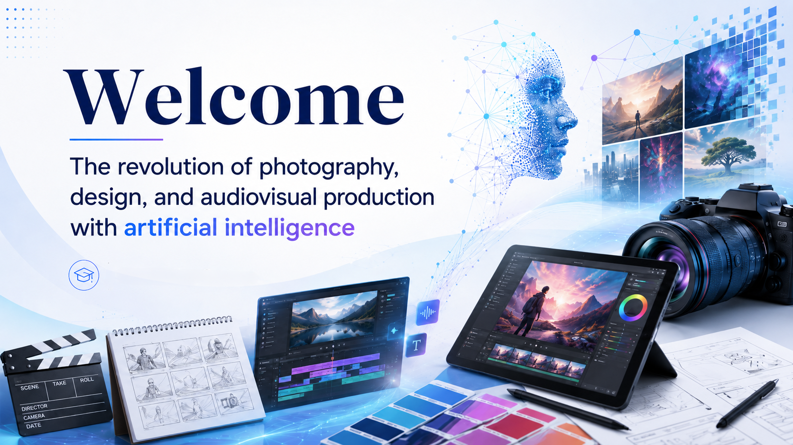
AI image generation is not a magic button. It is a visual negotiation between human intention, prompt language, training data, model behavior, interface constraints, and iterative judgment.
Human Intention vs Machine Interpretation Loop. AI image generation works best as an iterative loop between intention, prompt, interpretation, evaluation, and revision.
A better prompt often emerges after comparing intention with machine interpretation.
In this module, you become a director, editor, critic, designer, and technical operator. Focus on process, interpretation, and revision rather than only on producing a visually impressive image.
Core learning question: What did I actually tell the system, what did it interpret, and how can I adjust the process?
Learning Objectives
By the end of this module, you should be able to:
- Explain what AI image generation means and how text-to-image systems transform instructions into visual outputs.
- Distinguish between traditional algorithmic image-making and deep-learning-based image generation.
- Identify three major historical stages in AI image generation: Neural Style Transfer, GANs, and diffusion models.
- Recognize common uses of AI image generation in photography, design, advertising, audiovisual preproduction, games, science, simulation, and education.
- Describe key limitations such as visual hallucinations, weak text rendering, anatomical errors, spatial inconsistency, and unstable visual continuity.
- Compare human intention with machine interpretation and use that comparison to improve a prompt.
Screen 3 of 21
What It Means to Generate an Image with AI
AI image generation uses a trained computational model to create a new visual output from an input instruction. The instruction may be a text prompt, reference image, sketch, mask, or a combination of inputs.
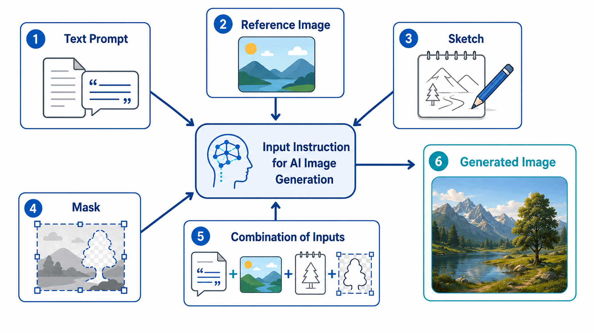
The model does not understand a prompt as a person does. It has learned statistical relationships between words and visual patterns from large image-text datasets. It predicts visual forms that are likely to correspond to the prompt.
Key message: A prompt gives visual direction, but it does not transfer your imagination directly into the system.
Key points
AI image generation is a negotiation between intention, language, data, model behavior, interface constraints, and judgment.
A prompt is a structured instruction interpreted through learned visual patterns.
Ambiguous prompts often produce surprising outputs because the model must fill in missing details.
Creative control begins when you can describe what you wanted, what the machine produced, and what needs to change.
Screen 4 of 21
Traditional Algorithms vs Deep Learning
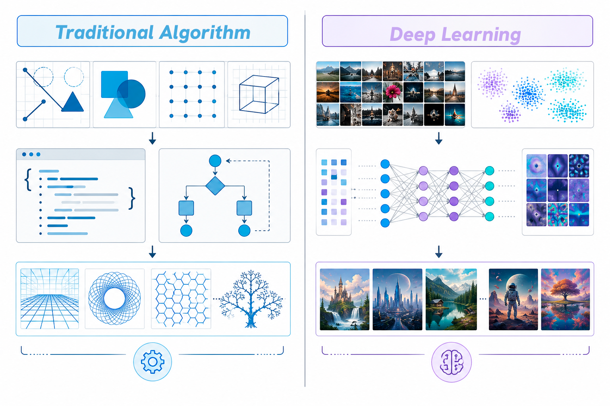
Computer-generated images existed long before current AI tools. Traditional algorithmic images are produced through explicit rules written by humans. Deep-learning-based image generation works differently: the model learns patterns from large collections of examples and produces probabilistic outputs.
Traditional Algorithmic Images vs Deep Learning Images. Traditional systems execute explicit rules; deep-learning systems generate from learned visual patterns.
These are the reasons why AI can be surprising and flexible but also unpredictable.
Traditional algorithmic approach | Deep-learning approach |
|---|---|
Rules are explicitly programmed. | Patterns are learned from data. |
Outputs are usually predictable. | Outputs are probabilistic. |
The human defines most visual logic. | The model contributes visual interpretation. |
Strong for precise operations. | Strong for open-ended generation. |
Limited surprise. | High surprise, but also higher unpredictability. |
Key message: Rule-based systems execute instructions; deep-learning systems infer patterns.
Screen 5 of 21
Historical Milestones
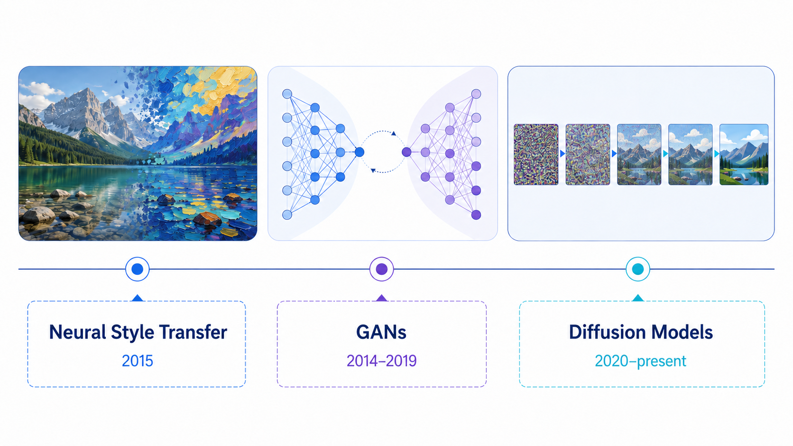
Timeline of AI Image Generation Milestones. AI image generation evolved through style transfer, adversarial networks, and diffusion-based generation.
Three historical moments help explain the current landscape: Neural Style Transfer, GANs, and diffusion models.
Milestone | Core idea | Why it matters |
|---|---|---|
Neural Style Transfer | Recombines content and style from images. | Showed that neural networks could manipulate visual appearance creatively (Gatys et al., 2015). |
Generative Adversarial Networks (GANs) | Uses a generator and discriminator trained in opposition. | Made synthetic faces, textures, objects, and variations more visible in generative media research (Goodfellow et al., 2014 ). |
Diffusion Models | Generate by progressively denoising from noise under learned guidance. | Became central to many modern image-generation workflows (Ho et al., 2020; Rombach et al., 2022). |
Matching activity: historical concepts
Match each concept to the correct milestone.
Screen 6 of 21
Neural Style Transfer
Timeline of AI Image Generation Milestones. AI image generation evolved through style transfer, adversarial networks, and diffusion-based generation.
Neural Style Transfer became widely known around 2015. It demonstrated that neural networks could recombine the content of one image with the style of another, making visual transformation very fast.
Analogy: A musician can play the same melody in jazz, flamenco, or electronic style. Neural Style Transfer applies a similar idea to images: content remains recognizable while the expressive surface changes.
Screen 7 of 21
Generative Adversarial Networks
Timeline of AI Image Generation Milestones. AI image generation evolved through style transfer, adversarial networks, and diffusion-based generation.
Generative Adversarial Networks, or GANs, use two neural networks in tension: a generator that creates images and a discriminator that evaluates whether images appear real or fake. This adversarial setup made GANs influential for synthetic faces, textures, objects, and visual variations.
Analogy: Think of a student painter and a strict art critic. The painter produces images; the critic points out what is not convincing. Through repeated attempts, the painter improves.
Screen 8 of 21
Diffusion Models
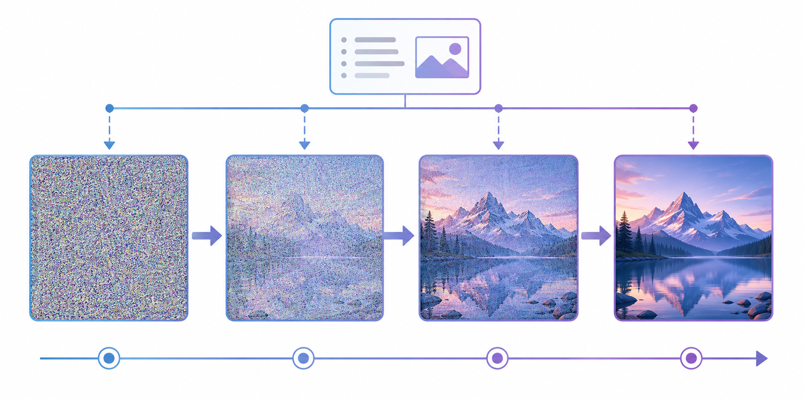
From Noise to Image: Simplified Diffusion Process. A simplified diffusion model starts from noise and gradually organizes it into a prompt-guided image.
Diffusion models are central to many modern AI image-generation systems. A simplified explanation is: start with noise, gradually remove noise, use the prompt as guidance, and build an image step by step.
Key message: Diffusion can be understood as organizing visual noise into a prompt-guided image.
Screen 9 of 21
Current Uses in Creative Fields
Professional Use-Case Map. AI image generation is useful for rapid ideation across visual, educational, scientific, and audiovisual contexts: AI as a tool for exploration
AI image generation can support concept development, moodboards, style references, character ideas, poster concepts, campaign visuals, product mockups, storyboards, environment concepts, lighting studies, and educational illustrations.
Useful early-stage applications
Concept exploration and moodboards
Advertising and campaign visual directions
Storyboard and audiovisual preproduction frames
Game environments and speculative visualization
Educational illustrations and visual explanations
Key message: Use AI for ideation, variation, and visual exploration; use human judgment for selection and meaning.
Screen 10 of 21
Common Limitations
Common Limitations Diagnostic Cards. Common limitations include fake text, anatomy errors, weak spatial logic, hallucinations, and unstable consistency.
Generated images are not automatically finished professional assets. AI systems can produce visual hallucinations: outputs that look plausible but are wrong, distorted, or invented.
Common issues
Fake or unreadable letters
Extra fingers or distorted anatomy
Inconsistent reflections and impossible lighting
Weak spatial logic
Unstable identity across multiple images
Key message: A beautiful image can still be unusable if it fails its communicative or technical purpose.
Screen 11 of 21
The Intention-Interpretation Gap

Human Intention vs Machine Interpretation Loop. AI image generation works best as an iterative loop between intention, prompt, interpretation, evaluation, and revision.
A better prompt often emerges after comparing intention with machine interpretation.
A prompt such as “a peaceful city” may mean a calm Mediterranean street to a human, but a futuristic skyline to the model. Ambiguous words force the system to guess. Better prompts specify visible details such as location, lighting, composition, style, mood, and constraints.
Example: “A peaceful city” can be rewritten as “A quiet Mediterranean side street in the early morning, warm limestone buildings, two people walking in the distance, soft natural light, calm atmosphere, realistic photography, minimal composition, muted warm colors.”
Key Concepts and Terminology
Use these terms to describe the process clearly and to document your decisions.
| Term | Student-facing definition |
|---|---|
| Artificial Intelligence | Computational systems designed to perform tasks associated with human-like capabilities, such as recognition, prediction, language processing, classification, or generation. |
| Generative AI | AI systems that create new content, including images, text, audio, video, code, 3D assets, or combinations of these. |
| Text-to-Image Generation | A workflow in which a written prompt is used to produce an image. |
| Model | The trained system that generates the image. Different models have different strengths, aesthetics, and limitations. |
| Dataset | The collection of images, captions, metadata, or other materials used to train a model. |
| Prompt | The instruction given to the model, usually a written description of the desired image. |
| Traditional Algorithmic Image-Making | Image creation based on explicit rules written by humans, such as geometric instructions, filters, or mathematical formulas. |
| Deep Learning | A machine learning approach in which neural networks learn patterns from large datasets instead of relying only on hand-coded rules. |
| Neural Style Transfer | A technique that recombines the content of one image with the style of another. |
| GAN | Generative Adversarial Network: a model family based on a generator and a discriminator trained in opposition. |
| Diffusion Model | A generative model that creates images through a process often explained as starting with noise and gradually denoising toward a prompt-guided image. |
| Hallucination | A plausible-looking but incorrect, distorted, or invented visual element. |
| Consistency | The ability to maintain stable visual elements across an image or series of images. |
| Machine Interpretation | The model’s output based on the prompt, training patterns, settings, and interface constraints. |
| Human Intention | The visual, conceptual, and communicative goal the user wants the image to achieve. |
Screen 13 of 21
Prompt Practice and Improvement
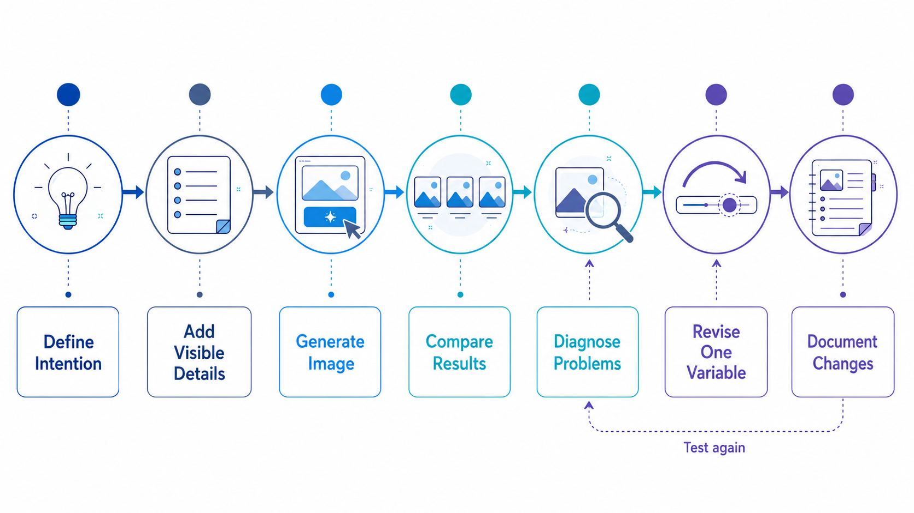
Prompt Improvement Flowchart. Prompt improvement is a controlled process of specification, generation, comparison, diagnosis, revision, and documentation.
The examples below show how vague prompts can be translated into more concrete visual instructions. The improved prompts are starting points for testing, comparison, and revision.
Original Prompt | Expected Result Description | Improved Prompt | Comparison Explanation |
|---|---|---|---|
A cool poster. | The system may produce a generic poster-like image with random style choices, possible fake text, unclear subject, and no reliable layout for communication. | A vertical poster background for a university film festival, minimal composition, abstract camera lens shape, large empty area left blank for typography, high contrast lighting, contemporary graphic design style, no text, no logos, no watermark. | The improved prompt turns a vague judgment (cool) into visible design choices: format, subject, composition, typography space, lighting, style, and constraints. |
A simple image of a peaceful city. | The system may invent a generic skyline, sunset colors, random people, or cultural clichés of peace because the terms simple, peaceful, and city are ambiguous. | A quiet Mediterranean side street in the early morning, warm limestone buildings, two people walking in the distance, soft natural light, calm atmosphere, realistic photography, minimal composition, muted warm colors. | The improved version specifies location, architecture, time, number of people, lighting, style, composition, and color palette. The model has fewer hidden choices to invent. |
A meaningful image about the future of creativity. | The output may be visually interesting but unpredictable: glowing brains, robots, abstract hands, futuristic clichés, or crowded symbolic elements. | A cinematic image of a design student standing at a studio table with sketches, a camera, and an AI-generated image on a large screen, warm daylight mixed with subtle blue digital light, balanced composition, reflective and optimistic mood, realistic style, no text. | The improved prompt translates an abstract theme into a concrete scene, subject, objects, lighting contrast, mood, and style while avoiding unreadable text. |
A futuristic university classroom where students collaborate with artificial intelligence tools, cinematic lighting, realistic style. | This may produce a strong general scene but could still invent the number of students, type of tools, culture of the space, and exact composition. | A realistic cinematic wide shot of a contemporary university design studio where four students collaborate around a table using laptops and tablets with abstract AI image previews, cameras and sketches visible on the table, soft blue and natural window light, clean academic atmosphere, no readable text. | The improved version keeps the same concept but adds composition, number of students, objects, lighting, atmosphere, and a no-text constraint. |
Screen 14 of 21
Process Documentation
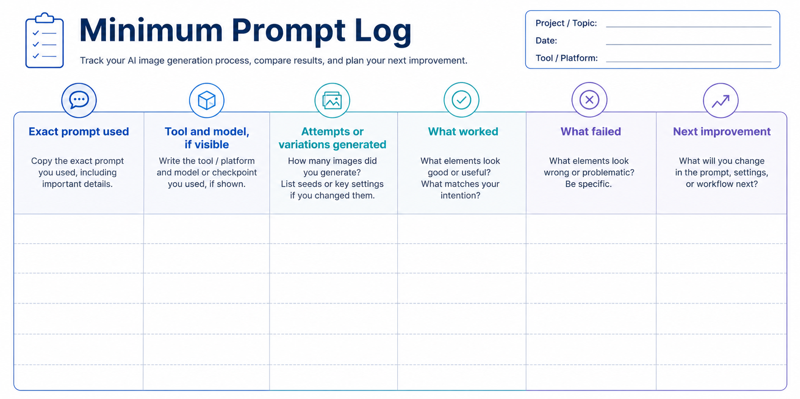
Documenting prompts, tools, attempts, observations, and revisions helps you learn from the process. It also allows you to explain creative and technical decisions. In AI-assisted creative work, the process is often as important as the final image.
Minimum prompt log
Exact prompt used
Tool and model, if visible
Attempts or variations generated
What worked
What failed
Next improvement
Screen 15 of 21
Activity 1 — Simple Prompt vs Ambiguous Prompt
Objective
Observe how a text-to-image model responds differently to a clear, concrete prompt and to a more ambiguous version of a similar prompt. The goal is not to produce the “best” image, but to understand how prompt clarity affects predictability, surprise, missing details, and machine interpretation.
In this activity, both prompts describe a cup on a table. This makes the comparison more focused: one prompt gives the model clear visual instructions, while the other leaves many choices open.
Required Tools
Any accessible text-to-image generator.
A place to save images or screenshots.
A notes document, spreadsheet, or activity worksheet.
Optional: projector or shared board for group comparison.
Part A — Before Generating: Predict the Output
Before using the image generator, read both prompts carefully.
Prompt A — Clear Prompt
A red ceramic cup on a wooden table, soft daylight, realistic photography.
Prompt B — Ambiguous Prompt
A meaningful image of a cup on a table.
Complete the prediction table before generating the images.
Question | Prompt A Prediction | Prompt B Prediction |
|---|---|---|
What do you expect to see? | ||
Which visual elements are clearly specified? | ||
Which details will the model need to invent? | ||
What color might the cup be? | ||
What material might the cup be made of? | ||
What kind of table might appear? | ||
What lighting might the model choose? | ||
How might the model interpret “meaningful”? | ||
How predictable do you think the result will be? 1 = low, 5 = high | ||
How surprising do you think the result will be? 1 = low, 5 = high |
Part B — Generate the First Outputs
Generate one image for each prompt.
Image A
Use this exact prompt:
A red ceramic cup on a wooden table, soft daylight, realistic photography.
Image B
Use this exact prompt:
A meaningful image of a cup on a table.
Save or screenshot both outputs.
Record the following information:
Field | Image A | Image B |
|---|---|---|
Tool used | ||
Prompt used | ||
Number of attempts | ||
Model or style preset, if visible | ||
Aspect ratio, if visible | ||
Seed, if visible |
Part C — First Reaction: Quick Visual Diagnosis
Look carefully at both images. Analyze how the model interpreted each instruction.
Evaluation Question | Image A | Image B |
|---|---|---|
What kind of cup appears? | ||
What color is the cup? | ||
What material does the cup seem to be made of? | ||
What kind of table appears? | ||
What lighting does the model choose? | ||
What visual style does the model choose? | ||
What did the model represent clearly? | ||
What did the model invent? | ||
What is missing from the prompt? | ||
What looks predictable? | ||
What looks surprising? | ||
Are there visual errors or hallucinations? | ||
Does the image match your original expectation? |
Part D — Human Intention vs Machine Interpretation
For each image, compare what you intended or expected with what the model produced.
Category | Image A — Clear Prompt | Image B — Ambiguous Prompt |
|---|---|---|
Human intention | ||
Machine interpretation | ||
Main match | ||
Main mismatch | ||
Most interesting invented element | ||
Main limitation observed |
Guiding question:
What did the machine assume because the prompt did not specify it?
For Prompt B, pay special attention to the word “meaningful.”
Ask:
Did the model make the image emotional?
Did it add symbolic objects?
Did it change the lighting or mood?
Did it include people, memories, nature, books, shadows, or other narrative elements?
Did it make the cup feel ordinary, symbolic, nostalgic, dramatic, or mysterious?
Part E — Interactive Pair Discussion
Work with a partner. Show each other your two images.
Discuss:
Which Image A results are most similar across students?
Which Image B results are most different?
Did the ambiguous prompt produce more creative results, more confusing results, or both?
Which prompt gave the model more freedom?
Which prompt gave the student more control?
How did the model visually interpret “meaningful”?
Did Prompt B still feel related to Prompt A, or did it move in a very different direction?
Together, write one sentence completing this idea:
The clearer prompt produced __________, while the ambiguous prompt produced __________.
Part F — Improve the Ambiguous Prompt Without Removing Creative Freedom
Now revise Prompt B. Your goal is to make it more visually specific while still leaving space for interpretation.
Original ambiguous prompt:
A meaningful image of a cup on a table.
Use this scaffold:
A [style or medium] image of a [cup description] on a [table description], with [lighting/color/mood], suggesting [kind of meaning], while leaving [open element] open to interpretation.
Example improved version:
A realistic photograph of a simple ceramic cup on an old wooden table, soft morning light, quiet atmosphere, suggesting memory and solitude, with the background left open to interpretation.
This improved prompt still allows creative freedom, but it gives the model more visual anchors: style, material, surface, lighting, mood, and emotional direction.
Now write your own improved prompt:
Field | Your answer |
|---|---|
Cup description | |
Table or surface description | |
Visual style | |
Lighting or color | |
Mood | |
What kind of “meaning” should the image suggest? | |
What should remain open or creative? | |
Improved Prompt B |
Part G — Generate the Improved Version
Generate a third image using your improved Prompt B.
Save or screenshot the result.
Question | Improved Prompt B Result |
|---|---|
What improved compared with the original ambiguous prompt? | |
What became more predictable? | |
What creative freedom remained? | |
What did the model still invent? | |
What would you revise next? |
Part H — Mini Gallery Walk
Display or share your three images:
Image A — clear prompt.
Image B — ambiguous prompt.
Image C — improved ambiguous prompt.
Each student leaves one short comment on another student’s work:
Feedback prompt | Peer comment |
|---|---|
The clearest machine interpretation was… | |
The most interesting surprise was… | |
One detail that could be specified next is… |
Final Reflection
Answer in 4–6 sentences:
How could the ambiguous prompt be improved without removing creative freedom?
Your answer should mention:
what should be specified;
what can remain open;
how the model interpreted missing information;
how the word “meaningful” affected the result;
how prompt clarity affected predictability and surprise.
Expected Outcome
By the end of the activity, you should have:
two original generated images;
one improved generated image;
a comparison table;
notes on predictability, surprise, missing details, and invented elements;
a short reflection explaining how prompt clarity changed the result.
Completion Checklist
Mark the activity complete when you have finished all items.
Task | Complete |
|---|---|
Predicted the outputs before generating | |
Generated Image A | |
Generated Image B | |
Saved or screenshotted both images | |
Recorded tool, prompt, attempts, and visible settings | |
Compared predictability and surprise | |
Identified invented or missing details | |
Analyzed how the model interpreted “meaningful” | |
Improved the ambiguous prompt | |
Generated the improved version | |
Completed final reflection |
Screen 16 of 21
Activity 2 — Prompt Detective
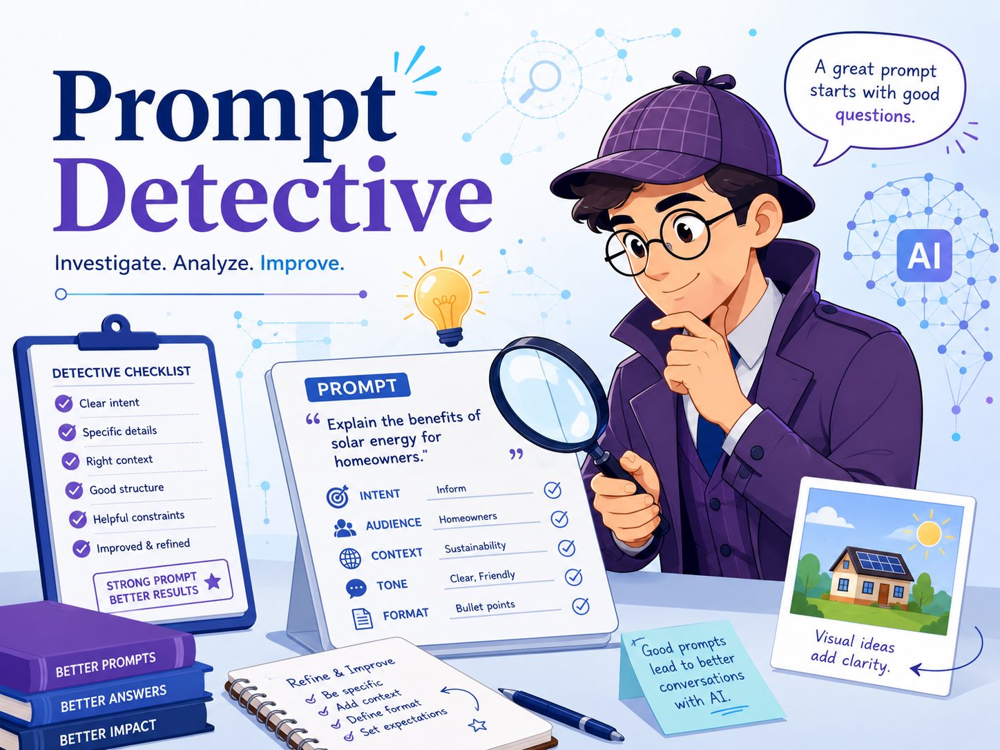
Objective
Analyze how an AI image-generation system translates ambiguous prompts into visual choices by matching already-generated images with the prompts that produced them.
Students will act as prompt detectives. They will observe visual clues, infer the most likely prompt, justify their reasoning, and reflect on how the AI interpreted ambiguous language.
The goal is not only to guess correctly. The goal is to understand how words such as meaningful, mysterious, important, artistic, and creativity become visible in an AI-generated image.
Required Materials
Five images already generated by the instructor.
The five prompts used to generate them.
A worksheet, notes document, or shared board.
A projector, screen, LMS page, or printed image sheet.
Optional: sticky notes or digital voting tool.
Prompt Set Used by the Instructor
The instructor has already generated one image from each prompt below.
Option 1 — Ambiguous Emotion
A meaningful image of a cup on a table.
Option 2 — Ambiguous Mood
A mysterious cup on a table.
Option 3 — Ambiguous Story
A cup on a table after something important happened.
Option 4 — Ambiguous Style
A beautiful artistic image of a cup on a table.
Option 5 — Ambiguous Context
A cup on a table in a place where creativity happens.
| Option | Prompt used by the instructor | Corresponding image |
|---|---|---|
| Option 1 — Ambiguous Emotion | A meaningful image of a cup on a table. | |
| Option 2 — Ambiguous Mood | A mysterious cup on a table. | |
| Option 3 — Ambiguous Story | A cup on a table after something important happened. | |
| Option 4 — Ambiguous Style | A beautiful artistic image of a cup on a table. | |
| Option 5 — Ambiguous Context | A cup on a table in a place where creativity happens. |
Part A — Silent Observation
Look carefully at each image. Do not try to guess the prompt immediately.
First, collect visual evidence.
For each image, write down visible clues.
Image | Visible clues: objects, lighting, style, setting, mood, symbols, story |
|---|---|
Image A | |
Image B | |
Image C | |
Image D | |
Image E |
Look for:
cup color;
cup material;
table material;
lighting;
shadows;
background;
artistic style;
emotional tone;
extra objects;
signs of mystery;
signs of creativity;
signs that something happened;
symbolic elements;
unusual details;
visual clichés.
Part B — Individual Guess
Now match each image with the prompt you think produced it.
Use each prompt only once.
Image | Your prompt guess | Confidence 1–5 | Main evidence |
|---|---|---|---|
Image A | |||
Image B | |||
Image C | |||
Image D | |||
Image E |
Prompt Options
Ambiguous Emotion — A meaningful image of a cup on a table.
Ambiguous Mood — A mysterious cup on a table.
Ambiguous Story — A cup on a table after something important happened.
Ambiguous Style — A beautiful artistic image of a cup on a table.
Ambiguous Context — A cup on a table in a place where creativity happens.
Part C — Evidence Cards
For each image, select the strongest evidence card that supports your guess.
Evidence Card | What it suggests |
|---|---|
Emotion card | The image feels symbolic, nostalgic, lonely, hopeful, reflective, or emotionally charged. |
Mystery card | The image uses shadows, darkness, fog, unusual lighting, hidden elements, suspense, or uncertainty. |
Story card | The image suggests something happened before the scene: spilled liquid, broken object, empty chair, letter, mess, dramatic aftermath, or a sense of interruption. |
Style card | The image looks especially artistic, painterly, designed, stylized, abstract, decorative, or visually expressive. |
Context card | The image shows a creative environment: studio, workshop, sketchbook, art tools, camera, laptop, paint, design materials, or creative workspace. |
Complete the table.
Image | Selected evidence card | Specific visual clue |
|---|---|---|
Image A | ||
Image B | ||
Image C | ||
Image D | ||
Image E |
Part D — Group Debate
Work in small groups. Compare your answers before the instructor reveals the correct matches.
For each image, discuss:
Which prompt did most people choose?
Which visual clues created agreement?
Which visual clues created confusion?
Which image was easiest to match?
Which image was hardest to match?
Did any image seem to match more than one prompt?
Did the AI use obvious visual clichés?
Record your group’s final decision.
Image | Group prompt decision | Group confidence 1–5 | Why? |
|---|---|---|---|
Image A | |||
Image B | |||
Image C | |||
Image D | |||
Image E |
Part E — Reveal and Score
The instructor now reveals the correct prompt-image matches.
Mark each answer.
Image | Your guess | Correct prompt | Correct? |
|---|---|---|---|
Image A | |||
Image B | |||
Image C | |||
Image D | |||
Image E |
Score Guide
Result | Meaning |
|---|---|
5 correct | Expert prompt detective |
4 correct | Strong visual analyst |
3 correct | Good observer |
2 correct | The prompts were visually overlapping |
0–1 correct | The model interpreted the prompts unpredictably |
A low score is not a failure. It may show that the prompts were too ambiguous, visually overlapping, or interpreted unpredictably by the model.
Part F — What Did the AI Do With the Words?
After the reveal, analyze how the AI translated each abstract word into visual form.
Prompt word or phrase | How did the AI make it visible? | Was it effective? |
|---|---|---|
Meaningful | ||
Mysterious | ||
After something important happened | ||
Beautiful artistic | ||
Place where creativity happens |
Discussion questions:
Which prompt produced the clearest visual clues?
Which prompt produced the most generic image?
Which prompts overlapped visually?
Which word was the most ambiguous?
Which image contained useful creative surprise?
Which image showed loss of control?
Which AI interpretation felt like a cliché?
Which AI interpretation was unexpected but effective?
Part G — Rewrite the Hardest Prompt
Choose the prompt that was hardest to identify.
Rewrite it so that it remains creative but produces clearer visual clues.
Example
Original prompt:
A meaningful image of a cup on a table.
More detectable version:
A quiet realistic photograph of a worn ceramic cup on an old wooden table beside a handwritten letter, soft morning light, nostalgic mood.
Now rewrite one prompt.
Field | Your answer |
|---|---|
Original prompt | |
Why was it hard to identify? | |
What visual clues should be added? | |
What should remain open or creative? | |
Revised prompt |
Part H — Optional Challenge: Make the Prompt Harder or Easier
Choose one of the five prompts.
Create two new versions:
Easier-to-detect version
Add visual clues so that the prompt is easier to recognize.
Harder-to-detect version
Make the prompt more open, subtle, or ambiguous.
Version | Prompt |
|---|---|
Original prompt | |
Easier-to-detect version | |
Harder-to-detect version |
Discuss:
Which version gives more control?
Which version gives more creative freedom?
Which version would be better for exploration?
Which version would be better for production?
Final Reflection
Answer in 4–6 sentences:
What did this activity teach you about human intention and machine interpretation?
Your answer should mention:
how the model translated abstract words into visual clues;
which prompt was easiest or hardest to identify;
how ambiguity can create both surprise and confusion;
what details help make a prompt more detectable;
how visual interpretation depends on both the prompt and the model’s assumptions.
Expected Outcome
By the end of the activity, students should have:
matched five already-generated images to five ambiguous prompts;
identified visual clues used by the AI model;
discussed uncertainty and overlap between prompts;
analyzed how abstract words became visual elements;
rewritten one prompt to make the intended interpretation clearer.
Completion Checklist
Mark the activity complete when you have finished all items.
Task | Complete |
|---|---|
Observed all five images carefully | |
Listed visual clues for each image | |
Matched each image to one prompt | |
Added confidence scores | |
Selected evidence cards | |
Discussed answers with a group | |
Checked results after the reveal | |
Analyzed how the AI interpreted the prompt words | |
Rewrote one prompt to make it more detectable | |
Completed final reflection |
Screen 17 of 21
Activity 3 — Spot the Deepfake
Objective
Analyze a curated set of real, manipulated, and AI-generated images in order to determine whether each image is:
a real photograph;
a manipulated, staged, or misleading image from before the current AI-generation era;
an AI-generated or AI-assisted image.
The goal is not only to guess correctly. The goal is to explain why an image looks real, fake, manipulated, or suspicious.
This activity also shows an important historical idea:
Visual deception did not begin with generative AI.
Images have been staged, edited, manipulated, cropped, miscaptioned, and used persuasively for more than a century. Generative AI makes the problem faster, easier to produce, and often more realistic.
Image A
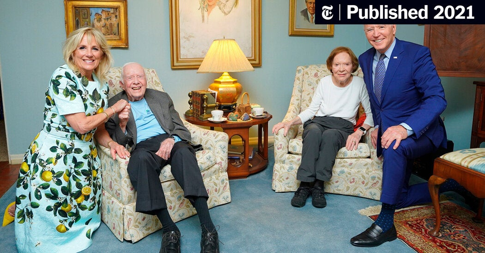
Image B
Image C
Image D
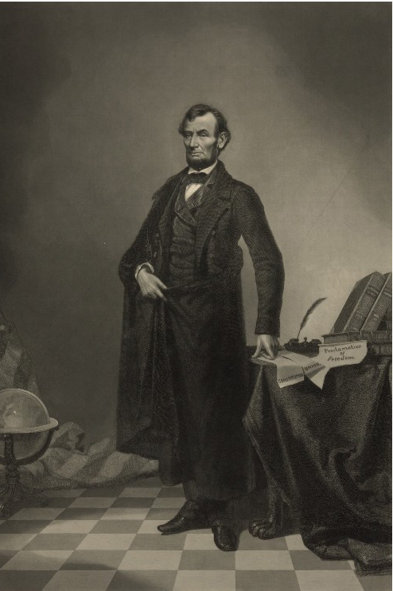
Image E
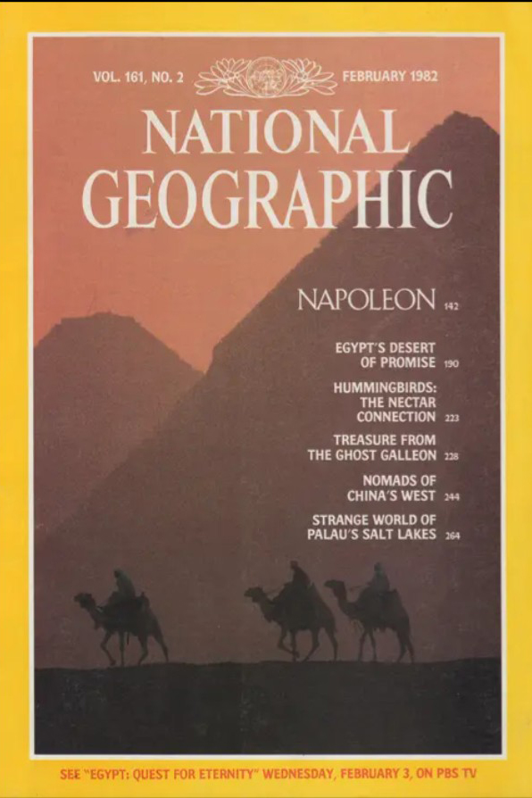
Image F
Image G
Image H
Student Activity
Part A — First Impression Vote
Look at each image quickly. You have only 10–15 seconds per image.
Make an immediate guess.
Image | First impression: Real / Manipulated / AI-generated | Confidence 1–5 |
|---|---|---|
Image A | ||
Image B | ||
Image C | ||
Image D | ||
Image E | ||
Image F | ||
Image G | ||
Image H |
Discussion prompt:
Which images felt immediately believable? Why?
Part B — Slow Looking: Visual Evidence Hunt
Now examine each image carefully.
Use the clue categories below.
Clue category | What to look for |
|---|---|
Anatomy | Hands, fingers, ears, eyes, teeth, hairline, body proportions, facial symmetry. |
Clothing and accessories | Strange fabric folds, impossible seams, warped jewelry, inconsistent glasses, unrealistic hats, odd shoes. |
Text and symbols | Fake letters, distorted signs, unreadable labels, incorrect logos, strange badges. |
Lighting and shadows | Shadows going in different directions, light source mismatch, unrealistic reflections. |
Perspective and space | Objects floating, impossible scale, inconsistent depth, strange background geometry. |
Object logic | Objects merging, handles missing, broken tools, unrealistic furniture, strange edges. |
Texture and detail | Over-smooth skin, plastic texture, repeated patterns, strange sharpness, unnatural blur. |
Context and plausibility | Does the scene make sense historically, socially, politically, or culturally? |
Source clues | Is there a known photographer, publication, date, archive, or fact-check? |
Complete the table.
Image | Visual clues that support or question authenticity |
|---|---|
Image A | |
Image B | |
Image C | |
Image D | |
Image E | |
Image F | |
Image G | |
Image H |
Part C — Evidence-Based Classification
Classify each image again, but now justify your decision using evidence.
Image | Final classification | Main evidence | Confidence 1–5 |
|---|---|---|---|
Image A | Real / Manipulated / AI-generated | ||
Image B | Real / Manipulated / AI-generated | ||
Image C | Real / Manipulated / AI-generated | ||
Image D | Real / Manipulated / AI-generated | ||
Image E | Real / Manipulated / AI-generated | ||
Image F | Real / Manipulated / AI-generated | ||
Image G | Real / Manipulated / AI-generated | ||
Image H | Real / Manipulated / AI-generated |
Important rule:
“It looks fake” is not enough. You must describe the visual clues that support your decision.
Useful sentence starters:
I think this image is real because…
I think this image was manipulated before AI because…
I think this image is AI-generated because…
The strongest clue is…
The image is difficult to classify because…
I am uncertain because…
Part D — Deepfake Clue Cards
For each image, choose the strongest clue card.
Clue card | What it suggests |
|---|---|
Anatomy card | Something about the body, face, hands, eyes, or proportions looks suspicious. |
Texture card | Skin, clothing, hair, fabric, or surfaces look too smooth, artificial, or inconsistent. |
Text card | Letters, signs, symbols, or labels are unreadable, distorted, or wrong. |
Lighting card | Light, shadow, reflection, or contrast does not match the scene. |
Perspective card | Space, scale, depth, or geometry feels impossible or inconsistent. |
Context card | The event, location, clothing, or behavior seems historically or socially unlikely. |
Source card | The image needs verification because the origin, date, or publication is unclear. |
Surprise card | The image looks fake at first but may be real because real photography can be strange. |
Complete the table.
Image | Selected clue card | Specific clue |
|---|---|---|
Image A | ||
Image B | ||
Image C | ||
Image D | ||
Image E | ||
Image F | ||
Image G | ||
Image H |
Part E — Group Debate
Work in groups of 3–4.
Each group chooses:
one image they feel confident about;
one image they are uncertain about.
For each image, discuss:
What visual clues support your classification?
What visual clues create doubt?
Could the image be real but unusual?
Could the image be old manipulation rather than AI-generated?
Could the image be AI-generated but visually convincing?
What additional information would you need to verify it?
Group notes:
Image | Group classification | Evidence | Remaining doubt |
|---|---|---|---|
Confident image | |||
Uncertain image |
Part F — Reveal and Correction
The instructor now reveals the correct classification for each image.
For each one, mark whether your classification was correct.
Image | Your classification | Correct classification | Correct? | What fooled you or helped you? |
|---|---|---|---|---|
Image A | ||||
Image B | ||||
Image C | ||||
Image D | ||||
Image E | ||||
Image F | ||||
Image G | ||||
Image H |
Reflection question:
Did you rely more on visual clues, emotional reaction, prior knowledge, or the image source?
Part G — What Type of Image Is It?
After the reveal, classify the false or altered images more precisely.
Type | Description |
|---|---|
Authentic photograph | A real photograph presented in an accurate context. |
Optical distortion | A real photograph that looks strange because of lens, angle, distance, reflection, or perspective. |
Staged image | A real photograph of an arranged or performed scene. |
Darkroom manipulation | An image altered through photographic techniques before digital editing. |
Digital manipulation | An image edited with software before the current AI-generation era. |
AI-generated image | An image created primarily by a generative AI system. |
AI-assisted manipulation | A real image partly altered, expanded, or modified using AI tools. |
Miscontextualized image | A real image presented with a false date, place, event, or explanation. |
Complete the table.
Image | More precise type | Explanation |
|---|---|---|
Image A | ||
Image B | ||
Image C | ||
Image D | ||
Image E | ||
Image F | ||
Image G | ||
Image H |
Part H — Verification Toolkit
Visual clues are useful, but they are not enough. A convincing fake may have few visible errors, and a real photograph may look strange.
Choose one image from the set and propose a verification plan.
Verification step | Question |
|---|---|
Source check | Where did the image first appear? |
Reverse image search | Does the image appear in older or reliable sources? |
Metadata check | Does the file include camera data, software data, or creation information? |
Context check | Does the event appear in reliable news sources? |
Technical check | Are there visual inconsistencies in anatomy, text, lighting, or physics? |
Plausibility check | Does the image confirm something people already want to believe? |
Lateral reading | What do fact-checkers or credible outlets say? |
Complete the verification plan.
Image selected | Verification plan |
|---|---|
Part I — What Makes an Image Believable?
As a class, collect the features that made images believable or suspicious.
Feature | Made the image feel real | Made the image feel suspicious |
|---|---|---|
Realistic lighting | ||
Recognizable person or place | ||
Historical style | ||
Emotional impact | ||
Familiar news format | ||
Strange hands or faces | ||
Distorted text | ||
Unclear source | ||
Social media virality |
Discussion prompt:
What made you trust an image too quickly?
Final Reflection
Answer in 5–7 sentences:
What makes an image believable, and why is visual evidence sometimes not enough?
Your answer should mention:
at least two visual clues;
one example of pre-AI manipulation;
one example of AI-generated imagery;
why people may believe false images;
why verification requires more than looking.
Expected Outcome
By the end of the activity, students should be able to:
distinguish between authentic, manipulated, and AI-generated images;
identify visual clues that suggest image manipulation;
understand that fake images existed before generative AI;
explain why AI-generated images can be convincing;
use verification strategies beyond visual inspection;
reflect on the relationship between images, trust, context, and evidence.
Completion Checklist
Mark the activity complete when you have finished all items.
Task | Complete |
|---|---|
Made a first-impression guess | |
Examined visual clues carefully | |
Classified each image using evidence | |
Selected clue cards | |
Discussed classifications with a group | |
Corrected answers after the reveal | |
Classified the precise type of image | |
Proposed a verification plan | |
Completed final reflection |
Answer Key
Image | Example | Correct classification | Source / verification note |
|---|---|---|---|
Image A | Biden–Carter optical illusion | Real photograph / optical distortion | Reuters fact-check |
Image B | Harris rally plane reflection claim | Real photograph accused of manipulation | Reuters fact-check |
Image C | Cottingley Fairies | Pre-AI staged image / photographic hoax | Historical photographic hoax |
Image D | Historical political photo manipulation | Pre-AI manipulated image | Political image manipulation |
Image E | National Geographic pyramids cover | Pre-AI digital editorial manipulation | Editorial image alteration |
Image F | Pope Francis puffer jacket | AI-generated image | Reuters / CBS / fact-checks |
Image G | Pentagon explosion | AI-generated news-style fake | Guardian / AFP fact-check |
Image H | Trump arrest image | AI-generated political image | AI-generated political misinformation example |
Suggested APA References
Reuters Fact Check. (2021, May 7). Explaining the optical illusion in the Biden-Carter photo. Reuters.
Reuters Fact Check. (2024, August 22). Plane reflection not proof of image manipulation at Michigan Harris rally. Reuters.
Reuters Fact Check. (2023, March 29). Image of Pope Francis wearing oversized white puffer coat is AI-generated. Reuters.
CBS News. (2023, March 28). Fake photos of Pope Francis in a puffer jacket go viral, highlighting power and peril of AI. CBS News.
The Guardian. (2023, May 22). Fake AI-generated image of explosion near Pentagon spreads on social media. The Guardian.
AFP Fact Check. (2023, May 22). Fake Pentagon explosion image spreads online. AFP Fact Check.
National Geographic. (2024, July 24). These manipulated photos are the original political deepfakes. National Geographic.
Reflection and Discussion
Respond to the questions below. These are reflection activities rather than graded items.
Final Assessment
This assessment contains 5 multiple choice questions, 3 true/false questions, and 2 short answer responses. Multiple choice and true/false items are auto-scored. Short answers are saved for reflection or review.
Pass mark: 70% on auto-scored items.
Module Summary
AI image generation is a powerful tool for visual exploration, but it is not a substitute for creative judgment. A generated image is produced from the interaction of human intention, prompt language, training data, model behavior, interface constraints, and evaluation.
The first step toward creative control is to compare what you intended with what the system interpreted. This habit prepares you for more advanced practices such as prompt engineering, controlled variation, inpainting, reference-based generation, upscaling, and pipeline design.
Key takeaways
- AI image generation is not magic; it is prompt-guided visual interpretation.
- Traditional algorithms follow rules; deep-learning systems generate from learned patterns.
- Neural Style Transfer, GANs, and diffusion models are key historical milestones.
- AI is useful for rapid visual exploration but has limitations in text, anatomy, counting, spatial logic, and consistency.
- Creative control grows from comparison, revision, documentation, and responsible judgment.
Next Steps
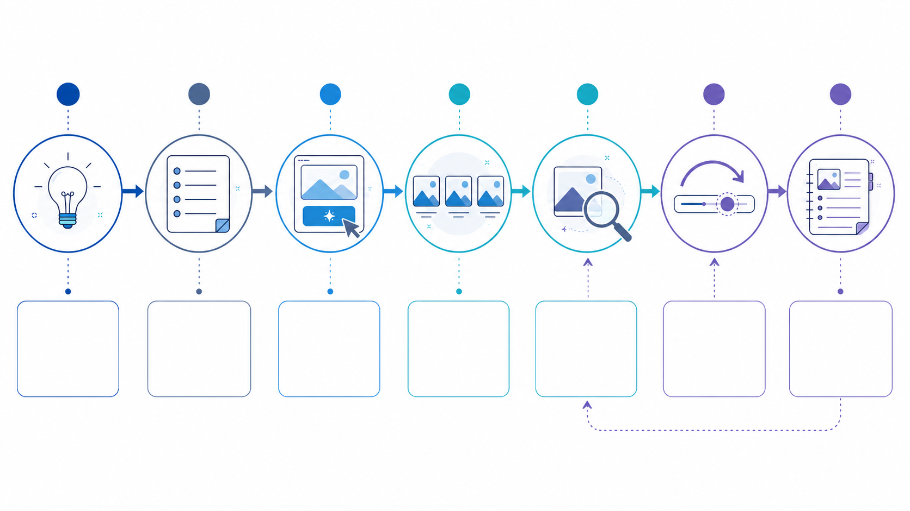
The flowchart reinforces controlled experimentation and process documentation.
- Practice rewriting vague prompts into concrete visual instructions.
- Keep a prompt log with outputs, observations, and revisions.
- Compare at least two different tools using the same prompt.
- Begin building a personal vocabulary for subject, style, lighting, composition, and mood.
- Prepare for deeper work on limitations, ethics, tool choice, and prompt engineering.
APA References
- Gatys, L. A., Ecker, A. S., & Bethge, M. (2015). A neural algorithm of artistic style. arXiv. https://arxiv.org/abs/1508.06576
- Goodfellow, I. J., Pouget-Abadie, J., Mirza, M., Xu, B., Warde-Farley, D., Ozair, S., Courville, A., & Bengio, Y. (2014). Generative adversarial nets. In Advances in Neural Information Processing Systems 27. https://arxiv.org/abs/1406.2661
- Ho, J., Jain, A., & Abbeel, P. (2020). Denoising diffusion probabilistic models. Advances in Neural Information Processing Systems, 33, 6840-6851. https://arxiv.org/abs/2006.11239
- National Institute of Standards and Technology. (2024). Artificial Intelligence Risk Management Framework: Generative Artificial Intelligence Profile (NIST AI 600-1). https://www.nist.gov/publications/artificial-intelligence-risk-management-framework-generative-artificial-intelligence
- Rombach, R., Blattmann, A., Lorenz, D., Esser, P., & Ommer, B. (2022). High-resolution image synthesis with latent diffusion models. Proceedings of the IEEE/CVF Conference on Computer Vision and Pattern Recognition, 10684-10695. https://arxiv.org/abs/2112.10752
- UNESCO. (2021). Recommendation on the Ethics of Artificial Intelligence. https://www.unesco.org/en/artificial-intelligence/recommendation-ethics